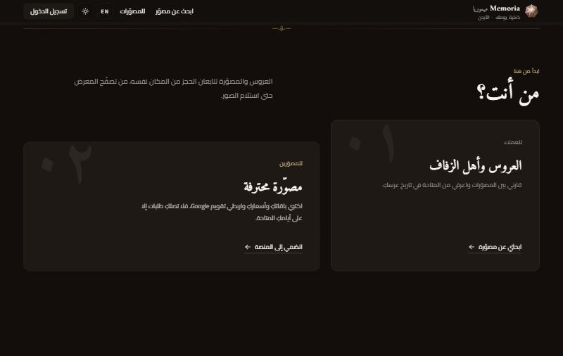
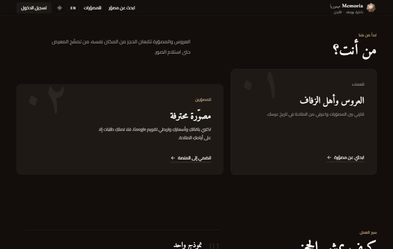
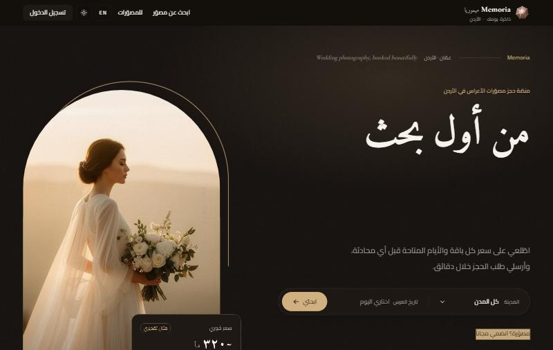
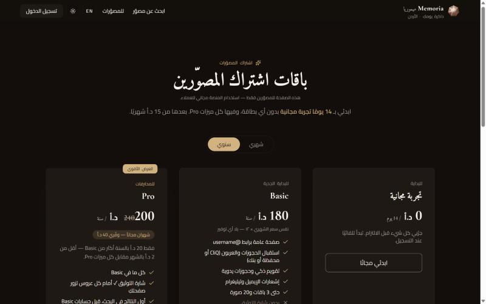
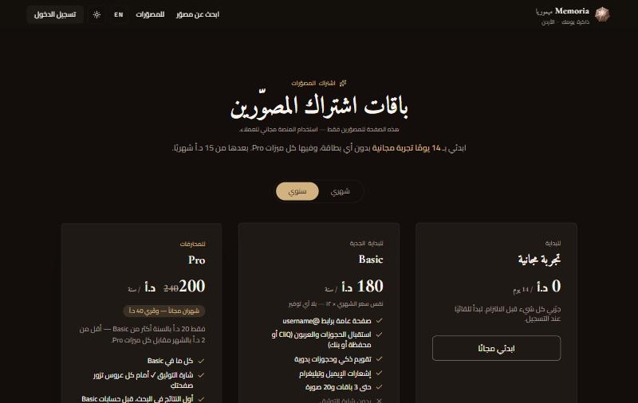

اليمين = قبل (آخر نسخة قبل التعديل) · اليسار = بعد (المنشورة الآن). لقطات بنفس المقاس، الوضع الداكن، سطح المكتب. اضغطي على أي صورة لتكبيرها.
أوضح فرق: المسافة بين الهيرو والقسم أقصر بنحو ٣٠ بكسل، وحافة البطاقة العليا تلمع بخط ضوء خافت فترفعها عن الخلفية الداكنة.


شبه متطابق عمداً. الفرق: حواف الصورة بإطار داخلي خفيف جداً، ونعومة الحروف.

أرقام الأسعار صارت بعرض ثابت لكل رقم (tabular)، وظلال البطاقات طبقتان.

